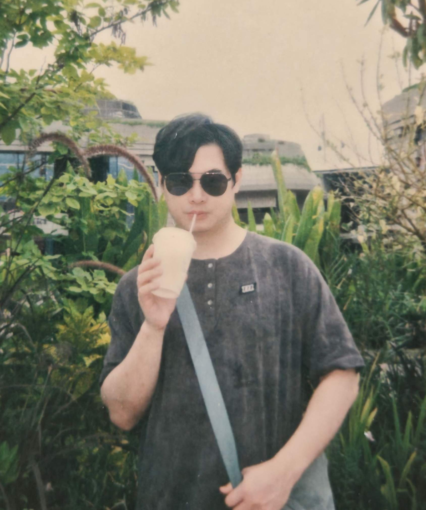

吴康彰 · Ken Ng
Kangzhang Wu · Ken Ng
个人简介
Biography
量化研究员，研究方向聚焦于算法交易微观结构建模、Alpha 因子挖掘与机器学习在金融市场中的方法论创新。本科兼修计算机科学（上海大学）与金融学（华东师范大学），并于香港大学取得计算机科学硕士学位，研究期间师从 Prof. Jerome Yen 与 Prof. S. M. Yiu，深入探索数值计算加速与强化学习驱动的衍生品交易策略。其后于头部量化机构从事七年以上的研究工作，将学术方法系统化地落地于实盘交易体系，致力于在统计学习、随机优化与高性能计算的交叉领域推进可验证、可复现的研究成果。
Kangzhang Wu is a quantitative researcher whose work centers on microstructure-aware algorithmic execution, alpha factor discovery, and methodological advances in machine learning for financial markets. He holds a B.Eng. in Computer Science from Shanghai University, a B.Econ. in Finance from East China Normal University, and an M.Sc. in Computer Science from The University of Hong Kong, where he conducted research under Prof. Jerome Yen and Prof. S. M. Yiu on numerical acceleration for derivatives pricing and reinforcement-learning-based trading strategies. Over the subsequent seven years at leading quantitative investment firms, he has translated this academic foundation into rigorous, reproducible research at the intersection of statistical learning, stochastic optimization, and high-performance computing.
研究兴趣
Research Interests
- 算法交易与市场微观结构 — 被动执行策略、最优挂单与撤单决策、流动性建模、市场冲击与成交概率估计。
- Alpha 因子与信号合成 — 截面预测、时序信号建模、因子正交化与组合优化。
- 机器学习方法论 — 基于树模型与深度学习的非线性信号合成、AutoML 与神经架构搜索 (NAS)、贝叶斯优化、强化学习。
- 金融工程与数值方法 — 隐含波动率曲面快速求解、GPU/异构并行计算、衍生品定价与套利。
- Algorithmic Execution & Microstructure — passive execution policies, optimal posting and cancellation, liquidity modeling, market-impact and fill-probability estimation.
- Alpha Construction & Signal Combination — cross-sectional prediction, time-series modeling, factor orthogonalization, portfolio optimization.
- Machine Learning Methodology — nonlinear signal combination via tree-based and deep-learning models, AutoML / NAS, Bayesian optimization, reinforcement learning.
- Financial Engineering & Numerics — fast solvers for implied volatility surfaces, GPU/heterogeneous parallel computing, derivatives pricing and arbitrage.
联系方式
Contact
学历背景
Education
研究与工作经历
Research & Professional Experience
- 量化交易策略开发：构建并迭代多类系统化交易策略，覆盖信号研究、组合优化与实盘部署。
- 衍生品产品定价：负责黄金、外汇、股票等多资产类别的 7×24 小时连续定价体系建设，提供给市场更精准丰富的交易产品。
- 做市商策略开发：设计并实现做市商报价与库存管理框架，优化双边挂单、对冲机制与不利选择风险控制。
- Quantitative trading strategy development: built and iterated systematic strategies end-to-end, covering signal research, portfolio optimization, and live deployment.
- Derivatives pricing: led 24/7 continuous pricing across gold, FX, equities and other asset classes.
- Market-making strategy development: designed quoting and inventory-management frameworks, optimizing two-sided posting, hedging, and adverse-selection controls.
算法执行 · AlgoSmart Execution
Algorithmic Execution · AlgoSmart
- 提出并实现 T0 算法交易的被动执行模型，在目标库存与完成率约束下，通过显式建模成交概率与执行效用，权衡 maker-flow 占比与市场冲击之间的折中关系，从而降低交易滑点。
- 模型以实时微观结构数据驱动挂单决策，在动态市场状态下完成对最优出价层级与撤改单时机的在线求解。
- 在日内交易算法的迭代中引入精细化 Alpha 信号与自研时序因子，结合波动率、成交概率与市场冲击的联合建模优化子单切片策略。
- Designed a passive execution framework for T0 algorithmic trading; explicitly modeling fill probability and execution utility under inventory and completion-rate constraints, formalizing the trade-off between maker-flow capture and market impact.
- Posting decisions are driven by real-time microstructure signals; the system performs online inference of optimal quote levels and cancel/replace timing under non-stationary regimes.
- Refined intraday algorithms by incorporating proprietary time-series factors and jointly modeling volatility, fill probability, and market impact to optimize sub-order slicing.
Alpha 研究
Alpha Research
- 完整开展端到端 Alpha 策略研究：因子构建与检验、信号合成、组合优化与风险约束、回测、模拟交易与实盘部署。
- 实盘资金管理规模逾 ¥20M，并对策略容量进行系统性扩展性研究，验证可推广至 ¥5B AUM 量级。
- End-to-end alpha research: factor construction and validation, signal merging, portfolio optimization with risk constraints, backtesting, simulation, and live deployment.
- Managed live portfolios in excess of ¥20M and conducted systematic capacity studies demonstrating scalability beyond ¥5B AUM.
机器学习方法论
Machine Learning Methodology
- 主导基于梯度提升树与深度学习架构的 Alpha 信号合成研究，显著提升截面预测的信息系数 (IC)。
- 创建 DeepAutoAlpha：基于 AutoML 与贝叶斯优化的神经架构搜索框架，实现自动化因子挖掘与最优合成模型发现，将 NAS 方法引入金融时序建模。
- Led research on alpha signal-merging models based on gradient boosting trees and deep neural architectures, materially improving cross-sectional Information Coefficient (IC).
- Originated DeepAutoAlpha, an AutoML and Bayesian-optimization-based NAS framework for automated factor mining and signal-merging-model discovery, introducing NAS to financial time-series modeling.
作为量化交易部门创始成员，自零搭建研究与交易基础设施，涵盖硬件平台、全栈交易管线、因子库与回测系统，并参与多类自研策略的方法论研究。
As a founding member of the quantitative desk, established the research and trading infrastructure from the ground up — hardware, the full-stack trading pipeline, the factor library, and the backtesting system — while contributing to several proprietary strategies.
加入知识图谱研究组，参与面向深圳市政府发展研究中心 (DRC) 的 AI 宏观经济分析系统研发；基于多源大规模数据与深度学习方法预测 GDP 等核心宏观指标。
Joined the Knowledge Graph Research Group to drive R&D of an AI-powered macroeconomic analysis system for the Shenzhen Development and Research Center (DRC); forecasted GDP and other key indicators using large-scale multi-source data and deep-learning models.
带领 11 人研究团队代表香港大学构建混合型算法交易系统，整合策略研究与实时交易模块。项目荣获 香港青年创业大赛季军。
Led an 11-member team representing HKU in building a hybrid algorithmic trading system that integrated strategy research with real-time execution. Awarded 3rd Prize at the Hong Kong Youth Startup Competition.
参与多家加密货币交易所对接系统的开发，并基于市场指标对交易所流动性进行监测与刻画。
Contributed to connectivity systems linking multiple cryptocurrency exchanges and characterized exchange liquidity through microstructure indicators.
研究项目
Research Projects
研究面向期权隐含波动率求解的高效算法，通过 C++ 与 OpenCL API 将关键数值计算逻辑迁移至 GPU 异构计算平台，显著加速波动率曲面生成，并以此探讨相对高频期权套利策略的可行性与盈利空间。研究成果发表于 International Journal of Financial Engineering。
Investigated efficient algorithms for option implied volatility by porting core numerical kernels onto GPU heterogeneous platforms via C++ and OpenCL. The resulting acceleration enables much faster volatility surface generation and supports relatively high-frequency option arbitrage. Published in International Journal of Financial Engineering.
硕士毕业研究，基于强化学习方法研究黄金期货与期权的交易策略，探讨在金融时序问题中状态空间设计、奖励函数构造与策略稳定性等核心议题。
Master's graduation research investigating reinforcement-learning-based trading strategies for gold futures and options, with emphasis on state-space design, reward shaping, and policy stability in financial time-series problems.
出版物
Publications
Wu, K., Yen, J., et al. Fast Generation of Implied Volatility Surface: Optimize the Traditional Numerical Analysis and Machine Learning. International Journal of Financial Engineering.